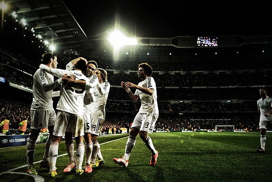

São armazenadas doações de entidades e empresas, especialmente as relacionadas com o desporto.

Em 13 de abril de 1982 ergueu a 15 Taça da Espanha ao vencer na final o Sporting de Gijón.

O Comité Olímpico Internacional revelou as novas datas do evento desportivo em Tóquio.

O capitão disputou 640 jogos com o Real Madrid, nos quais marcou 91 golos e conquistou 21 títulos.

Lorenzo e Fernando Sanz e Míchel Salgado recordam a figura daquele que foi presidente do Real Madrid.
Junta-se aos museus de Madrid que não vão abrir as suas portas a partir de amanhã devido ao coronavírus.